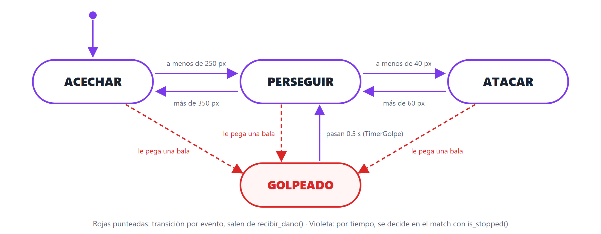

El jefe piensa
La máquina de estados de la clase anterior, escrita en vivo sobre el élite: acechar, perseguir, atacar y sentir el golpe. Un estado por vez, probando cada uno antes de seguir.
“Se dibuja el diagrama. Cada flecha es un if.”
Cómo va a ser la clase de hoy
🔴 Cuatro bloques en vivo
Sobre el proyecto clase-05 de la semana pasada. Se toca un solo script: slime_elite.gd.
- Dos estados:
ACECHAR⇄PERSEGUIR, con etiqueta - Atacar: deja de ser kamikaze y pega cada segundo
- Golpeado: una flecha que entra por un evento
- Que se note: una función
cambiar_estado()
👐 Las reglas de siempre
- El código se escribe, no se pega.
- Cada bloque termina con un punto de control en pantalla o en la consola.
- Antes de cada bloque, se mira el diagrama: qué estado y qué flechas se agregan.
enemigo.gd queda igual. El slime común sigue siendo kamikaze a propósito; el que piensa es el jefe.Lo que ya hace el élite, y lo que hereda
# slime_elite.gd, como quedó en la Clase 5+ extends Enemigo func _ready(): super() vida = 5 velocidad = 35 dano = 25 func morir(): print("💜 ¡Cayó un élite!") super()
Viene de Enemigo | Hoy… |
|---|---|
_process: perseguir siempre | se reemplaza por la máquina |
_on_body_entered: kamikaze | se anula (bloque 2) |
recibir_dano() | se amplía con super() (bloque 3) |
morir() | queda igual |
slime_elite.tscn a mano dentro de Enemigos, lejos del jugador. Al terminar la clase, se borra.La hija trae su propio _process
Sobreescribir una función
Si la clase hija define una función con el mismo nombre que la madre, para ese objeto corre la de la hija.
- Con
super()adentro: hace lo de la madre y además lo suyo (como el_readydel élite) - Sin
super(): la de la madre no corre. Se reemplaza
El _process del jefe va sin super(): si no, perseguiría siempre, además de la máquina.
El jugador, una sola vez
El slime común busca al jugador en cada frame. El jefe lo guarda en una variable en _ready(): es siempre el mismo nodo.
var jugador = null # en _ready(): jugador = get_tree().get_first_node_in_group("jugador")
Estado.keys()[estado] convierte el número del enum en texto. Es la mejor herramienta para depurar una máquina.ACECHAR ⇄ PERSEGUIR
extends Enemigo enum Estado { ACECHAR, PERSEGUIR } var estado = Estado.ACECHAR var jugador = null func _ready(): super() vida = 12 # es el jefe: aguanta más velocidad = 70 dano = 15 jugador = get_tree().get_first_node_in_group("jugador") func _process(delta): # REEMPLAZA el de Enemigo if jugador == null: return var d = position.distance_to(jugador.position) match estado: Estado.ACECHAR: acechar(delta) # hacer if d < 250: estado = Estado.PERSEGUIR # decidir Estado.PERSEGUIR: perseguir(delta) if d > 350: estado = Estado.ACECHAR $LabelEstado.text = Estado.keys()[estado] func acechar(delta): # hacia el jugador, a mitad de velocidad var dir = (jugador.position - position).normalized() position += dir * velocidad * 0.5 * delta func perseguir(delta): # lo mismo, a toda velocidad var dir = (jugador.position - position).normalized() position += dir * velocidad * delta
- En
slime_elite.tscn: hijoLabelllamado LabelEstado, arriba de la cabeza enum,estadoyjugador. Los números nuevos en_ready()_processcon elmatch, y las dos funciones- Un élite a mano, lejos del jugador. F6
250 en las dos flechas y quedarse justo en el borde: la etiqueta parpadea. Por eso son dos números distintos.Atacar: quieto, y un golpe por segundo
⏱️ Un Timer one shot como “enfriamiento”
En cada frame de ATACAR se pregunta: ¿el Timer está frenado? Si sí, pega y lo arranca. Mientras corre, no pega.
pega
pega
pega
if $TimerAtaque.is_stopped():
jugador.recibir_dano(dano)
$TimerAtaque.start()
🚫 Anular el kamikaze
Enemigo conecta body_entered a _on_body_entered, que pega y se borra. El jefe la redefine vacía:
func _on_body_entered(body): pass # el jefe no se sacrifica
La conexión la sigue haciendo el super() de _ready(), pero ahora llama a la función de la hija, que no hace nada.
Tercer estado: ATACAR
enum Estado { ACECHAR, PERSEGUIR, ATACAR } # en el match: PERSEGUIR tiene ahora dos salidas Estado.PERSEGUIR: perseguir(delta) if d < 40: estado = Estado.ATACAR elif d > 350: estado = Estado.ACECHAR Estado.ATACAR: atacar() if d > 60: estado = Estado.PERSEGUIR func atacar(): # quieto: no se mueve if $TimerAtaque.is_stopped(): jugador.recibir_dano(dano) $TimerAtaque.start() func _on_body_entered(body): # ANULA el kamikaze pass
- En
slime_elite.tscn: hijoTimerllamado TimerAtaque. Wait Time1, One Shot ✓, Autostart ✗ ATACARen elenumy las dos flechas en elmatchatacar()y la anulación de_on_body_entered- F6 y dejarse alcanzar
pass: el jefe vuelve a ser kamikaze. Destildar One Shot: pega una sola vez y nunca más (¿por qué?).Una flecha que no sale del match

| Flecha | Disparador | Dónde vive |
|---|---|---|
| entre los tres de arriba | distancia | el match |
de cualquiera a GOLPEADO | evento: un golpe | recibir_dano() |
de GOLPEADO a PERSEGUIR | tiempo: 0.5 s | el match |
(position - jugador.position). Y no lleva delta: no es un movimiento por frame, es un salto de 20 px, una sola vez.Cuarto estado: GOLPEADO
enum Estado { ACECHAR, PERSEGUIR, ATACAR, GOLPEADO } # en el match, al final: Estado.GOLPEADO: golpeado() if $TimerGolpe.is_stopped(): # pasó el medio segundo modulate = Color.WHITE estado = Estado.PERSEGUIR func golpeado(): # ni se mueve ni pega modulate = Color(1, 0.4, 0.4) # la flecha de ENTRADA: func recibir_dano(cantidad): super(cantidad) # resta vida; si llega a 0, muere if vida > 0: position += (position - jugador.position).normalized() * 20 $TimerGolpe.start() estado = Estado.GOLPEADO
- Otro
Timer: TimerGolpe, Wait Time0.5, One Shot ✓ GOLPEADOen elenum, su rama ygolpeado()recibir_dano()consuper(cantidad)y la flecha de entrada- F6. Los golpes los da la bomba de la Clase 5+: Enter
Color.WHITE adentro de golpeado(): nunca se ve rojo.Qué hace cada parte nueva de slime_elite.gd
| Línea | Qué hace y por qué |
|---|---|
enum Estado { … } | Nombres para los estados. Por dentro son 0, 1, 2, 3; en el código se lee la palabra. |
var estado = Estado.ACECHAR | La única pregunta: ¿qué está haciendo ahora? Arranca donde está el punto del diagrama. |
func _process(delta) sin super() | Reemplaza al de Enemigo. Los slimes comunes siguen usando el de la madre. |
match estado: | Elige una rama por frame. En cada una: hacer, y después decidir. |
$TimerAtaque.is_stopped() | “¿Ya pasó el segundo?”. Sin variables extra ni contar delta a mano. |
func _on_body_entered(body): pass | Anula el kamikaze: misma función, cuerpo vacío. |
super(cantidad) + if vida > 0 | La madre resta la vida y decide si muere. Solo si sobrevivió, hay golpe que sentir. |
Lo que pasa una sola vez, al cambiar de estado
Hoy: repartido por todos lados
estado = …aparece en seis lugares- La etiqueta se reescribe cada frame
- El rojo se pone en
golpeado()y se saca en otra rama - ¿Un color por estado? Habría que tocar cada flecha
Mejor: una función que cambia el estado
func cambiar_estado(nuevo): estado = nuevo # y todo lo que tiene que pasar # UNA vez al entrar a un estado
Cada flecha pasa a ser cambiar_estado(Estado.X). Un solo lugar para el cartel, el color, un sonido o una animación.
cambiar_estado(): un color y un aviso por estado
func cambiar_estado(nuevo): estado = nuevo var nombre = Estado.keys()[estado] $LabelEstado.text = nombre print("Jefe → " + nombre) match estado: Estado.ACECHAR: modulate = Color(1, 1, 1, 0.5) Estado.PERSEGUIR: modulate = Color.WHITE Estado.ATACAR: modulate = Color(1, 0.6, 0.2) Estado.GOLPEADO: modulate = Color(1, 0.4, 0.4) # en _ready(), al final: cambiar_estado(Estado.ACECHAR) # en el match y en recibir_dano(), cada flecha: if d < 250: cambiar_estado(Estado.PERSEGUIR)
- Escribir
cambiar_estado() - Reemplazar las seis
estado = …(cinco en elmatch, una enrecibir_dano) - Borrar la línea de la etiqueta del final de
_process,golpeado()y elColor.WHITE: ya los hace la función
print en _process en vez de acá: 60 líneas por segundo. La diferencia entre “cada frame” y “una vez al cambiar”.Cuando “no anda”: los sospechosos de hoy
| Síntoma | Casi siempre es… |
|---|---|
| El jefe no se mueve y la etiqueta está vacía | jugador es null: el élite a mano quedó arriba del Jugador en el árbol. Va dentro de Enemigos. |
| Los slimes comunes también cambiaron | Se modificó enemigo.gd. Todo lo de hoy va en slime_elite.gd. |
Node not found: "TimerAtaque" | El nodo no existe en slime_elite.tscn, o tiene otro nombre (mayúsculas incluidas). |
| Pega todo el tiempo, no cada segundo | Falta el $TimerAtaque.start() después de pegar. |
| Parpadea entre dos estados | El mismo número en la flecha de ida y la de vuelta. Falta el margen. |
Nunca llega a ATACAR | 40 px es poco para sprites grandes: probar d < 60 y d > 80. |
| Queda rojo para siempre | El Color.WHITE no está en la salida de GOLPEADO (o falta cambiar_estado en esa flecha). |
Desafío: el aviso antes del golpe
- Un estado nuevo,
AVISO, entrePERSEGUIRyATACAR: a menos de 40 px, el jefe pasa aAVISOen vez de atacar - En
AVISOse queda quieto y amarillo durante 0.4 s (unTimerAviso) - Al terminar el Timer: si el jugador sigue a menos de 60 px,
ATACAR; si no,PERSEGUIR
enum, una rama en el match y un color en cambiar_estado(). Nada más.Es el aviso de Hollow Knight: el jugador que lo lee a tiempo, se salva. El jefe se vuelve justo.
Todo lo que se escribió hoy
| Pieza | Para qué sirve | Bloque |
|---|---|---|
enum + match | Nombrar los estados y ejecutar solo la rama del estado actual | 1 |
Sobreescribir sin super() | Que el jefe tenga su propio _process sin tocar a la horda | 1 |
Estado.keys()[estado] | Ver el estado en una etiqueta: depurar mirando | 1 |
Timer one shot + is_stopped() | Hacer algo cada X segundos dentro de un estado | 2 |
Anular con pass | Apagar un comportamiento heredado | 2 |
| Flecha por evento | Entrar a un estado desde recibir_dano(), fuera del match | 3 |
cambiar_estado() | Un solo lugar para lo que pasa una vez al cambiar | 4 |
El TP de la semana: el jefe piensa
📝 TP 4: el jefe del survivors
- Lo de hoy, sobre el TP3: el élite con sprite animado y barra de vida
- Los golpes los dan las balas automáticas, no la bomba
- Colores por estado y un aviso por consola en cada cambio
- Ajustar los números hasta que el jefe se sienta bien
📚 Recursos
- Docs: GDScript basics, secciones
enumymatch, endocs.godotengine.org - La referencia de
Timer - GDQuest: Finite State Machine (para ir más lejos)
La semana que viene el juego se viste: menú, HUD, sonido y game feel. · Logo de Godot © Godot Foundation — CC BY 4.0.